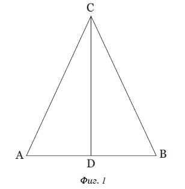

Беседа 1192 от 3877 · Беинса Дуно
Мерки в живота
Само светлият път на Мъдростта води към Истината.
Размишление
(Чете се резюме на темата: „Произход на рудокопачеството“.)
(Чете се темата: „Разлика между функциите на алгебрическите числа и функциите на органическите сили“.)
Каква е разликата между механическите и органическите действия? Изобщо, механическите действия са прости. Може ли да се прояви механическо действие без участието на разумна сила? Виждате, че един камък се търкаля от планината, или вода извира отнякъде. Механическо действие ли е падането на камъка? Като изучавате механическите и органическите функции, виждате, че причините, за да се извършват първите действия, са външни, а за вторите – вътрешни; механическите действия са прости, органическите – по-сложни, а психическите – най-сложни.

Сега ще ви дам работа за цяла година. Разделете се на групи, да изучавате всички удове на човека, както и вървежа, движенията му и т.н. Една група ще вземе да изучава очите, друга – ушите, трета – веждите, четвърта – носа, пета – устата, шеста – челото, седма – скулите на лицето, осма – брадата, девета – ръцете, десета – краката. Останалите групи ще изучават движенията, вървежа на волеви, енергични хора, както и на слабоволни, пасивни. Ще наблюдавате хората откъм лицето, откъм гърба, за да изучите най-дребните прояви на характера им. Без наблюдения нищо не можете да постигнете. Когато наблюдавате хората, с цел да ги изучавате, винаги взимайте два крайни типа – активен и пасивен тип. Ако изучавате ушите им, запример, ще наблюдавате ухото на активния, после на пасивния и ще направите разлика между тях. Щом научите двата вида уши, между тях ще поставите всички останали. След това намерете други два типа – единият интелигентен, а другият – неинтелигентен; изучете ушите им поотделно и след това направете разлика. Най-после сравнете ушите на други два типа хора: добродетелен и недобродетелен. Сравнете ушите им и отбележете разликата помежду им. Като правите своите изследвания, ще дойдете до заключение, коя част от ухото отговаря на интелигентността, коя – на добродетелта и коя – на жизнеността в човека. Всеки трябва да си има тефтерче, да отбелязва наблюденията си, както и деня, часа и времето, през които ги е правил. Също така ще рисувате. Каквото наблюдавате – ухо, око, уста, ще рисувате. Без рисунки нищо не можете да научите. След една година съзнателна работа всеки ще има по една специалност. Както правите наблюденията върху ушите, така ще правите и за останалите удове. Който изследва челото на човека, ще спре вниманието си и върху кожата му. Кожата на интелигентния човек е нежна, мека. По черепа се познава интелигентния от неинтелигентния. Това ясно се вижда по дебелината на костта.
Изобщо, при изследванията ще се стремите да не пресилвате нещата. Всяко пресилване на фактите ви отдалечава от истината. Ако челото на човека е вдлъбнато по средата, той не може да бъде историк, паметта му е слабо развита. Като разглеждате челото на математика, на естественика и на историка, виждате разликата между тях. Като изучавате черепите на хората, ще познаете техните религиозни и политически убеждения, ще знаете кой е православен, католик, евангелист, демократ, социалист и т.н.
Като ученици, вие трябва да придобивате нови, положителни знания, за да можете с тях да въздействате на себе си и на окръжаващите. Ако сте учители, ще знаете как да въздействате на децата, да им помагате. Едно докосване на учителя до някой център на главата на ученика може да трансформира енергията му и да го облекчи. Ако иска да накаже ученика си, учителят не трябва да го дърпа за горната част на ухото му, но да го хване отдолу, за месестата част, и леко да я дръпне надолу. Ако детето е разгневено, да пипне леко с двата си пръста върха на носа му. Дразненето на човека не се дължи на някаква вътрешна, органическа причина, а на външни причини – противодействия, мъчнотии и др.
Една от опасните страни в човека е, да вижда отрицателното в живота, в себе си и в окръжаващите. Понеже всеки човек, всяко нещо има две страни – добра и лоша, положителна и отрицателна, той трябва едновременно да вижда и двете, да ги съпоставя, изследва, анализира, претегля и тогава да спре вниманието си на неизменното, на доброто в човека. Всеки човек има нещо добро и възвишено. Следователно бъдете справедливи първо към себе си, а после към окръжаващите. Първо мерете, претегляйте нещата, а после правете заключения.
Казано е в Писанието: „Изпитвайте нещата, но доброто дръжте“.
Сега и на вас казвам: Изучавайте и доброто, и лошото, но доброто дръжте. Нека доброто бъде основа на живота ви, върху която да градите.
Само светлият път на Мъдростта води към Истината.
Лекция от Учителя, държана на 27 ноември 1927 г., София.